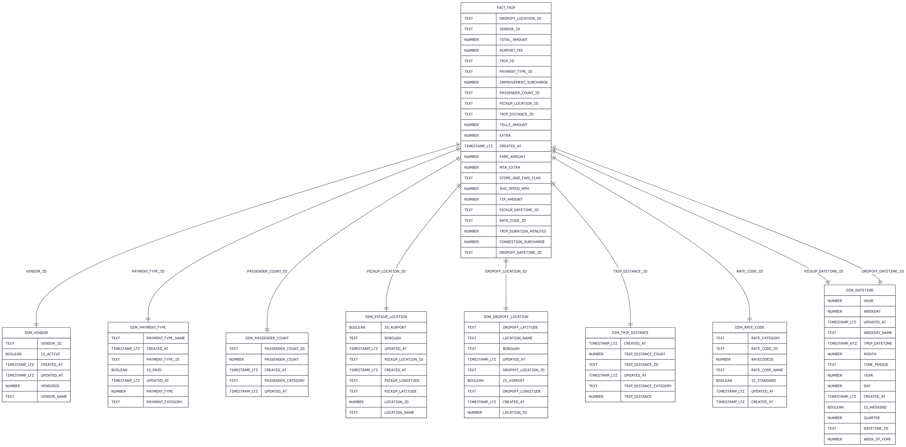
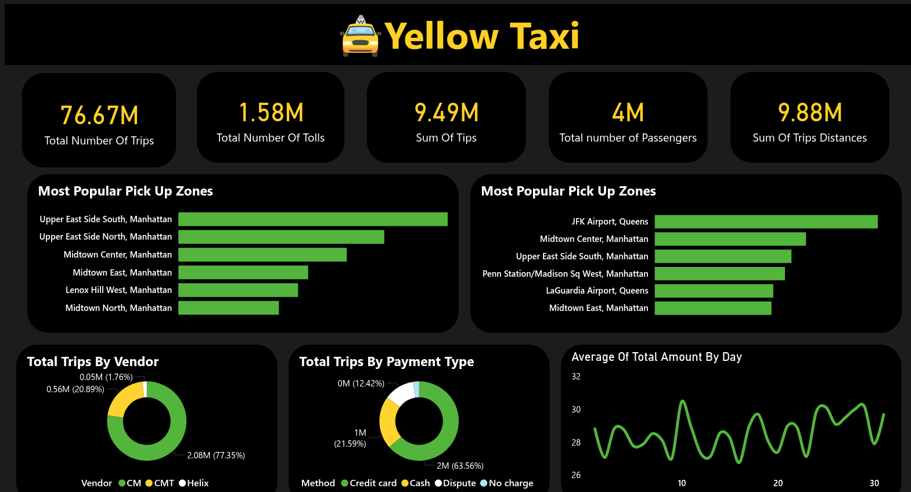

End-to-End Data Engineering Solution for TLC Trip Records
The NYC Taxi and Limousine Commission (TLC) generates millions of trip records monthly, creating a massive opportunity for data-driven insights. However, raw trip data alone cannot answer critical business questions: Which pickup zones generate the most revenue? How do payment methods vary by time and location? What factors influence tip amounts?
This project builds a scalable analytics pipeline that transforms TLC's Yellow Taxi trip records into actionable insights. By implementing dimensional modeling, automated ETL processes, and interactive dashboards, this solution enables taxi companies, city planners, and analysts to make informed decisions about operations, pricing, and service optimization.

The pipeline follows a modern ELT architecture: Raw TLC trip data is extracted from SQL Server and PostgreSQL using Python scripts, loaded into Snowflake's landing zone, then transformed through multiple layers using dbt (staging → intermediate → marts). The dimensional model enables efficient querying for Power BI dashboards, with automated daily refreshes ensuring stakeholders always have access to the latest insights.
Python-based ETL scripts extract trip records from the web to SQL Server, PostgreSQL and snowflake efficiently.
Modular transformation layers with comprehensive testing, documentation, and lineage tracking. Staging models clean raw data, intermediate models apply business logic, and marts create the dimensional model.
Optimized dimensional model with 8 dimension tables and 1 central fact table, enabling fast analytical queries for trip analysis, revenue tracking, and location intelligence.
Eeach month is more than 2 million records with nulls and trash data
Dealing with Parquet file format in SQL Server and Snowflake and transforming it to csv for PostgreSQL
Power BI dashboards provide real-time insights into trip patterns, revenue analysis by time/location, payment method trends, tip analysis, and operational metrics for taxi fleet optimization.
Explore the dashboard below
